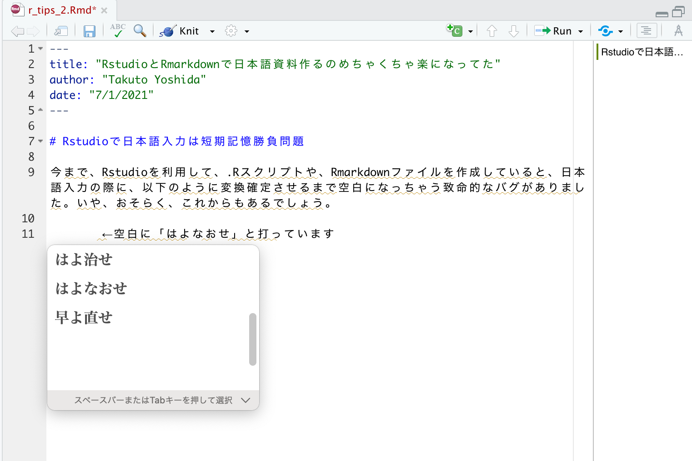
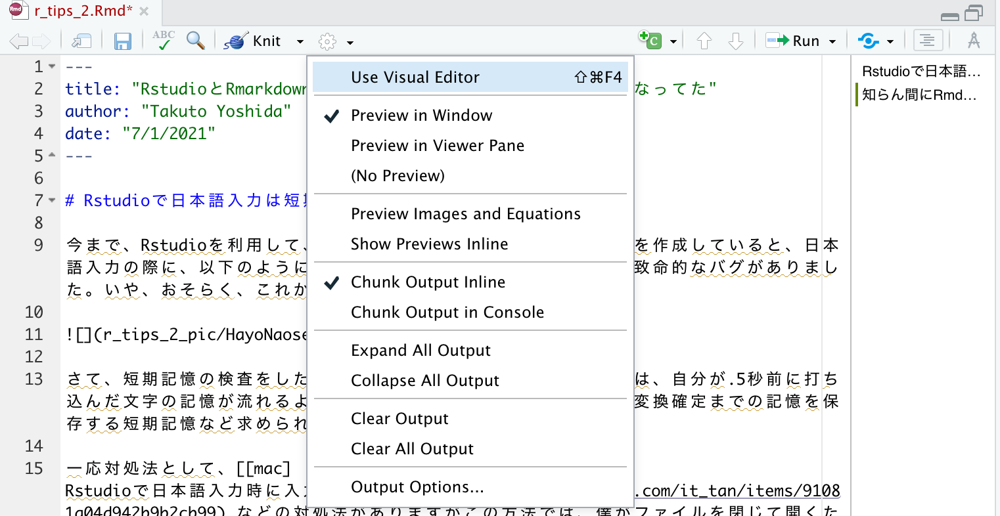
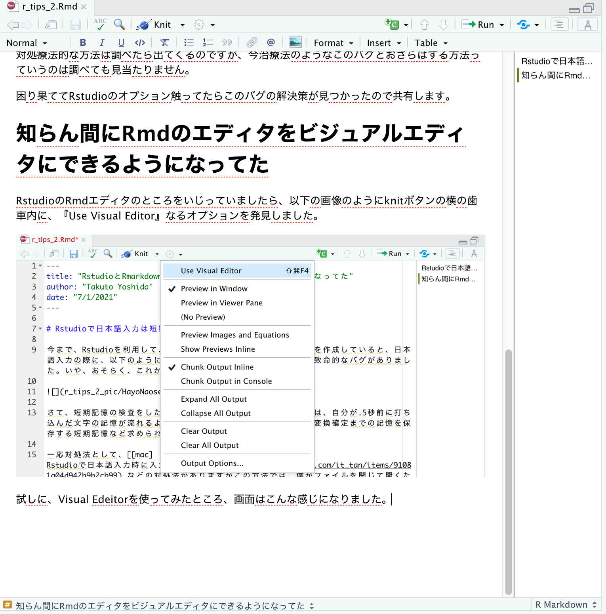
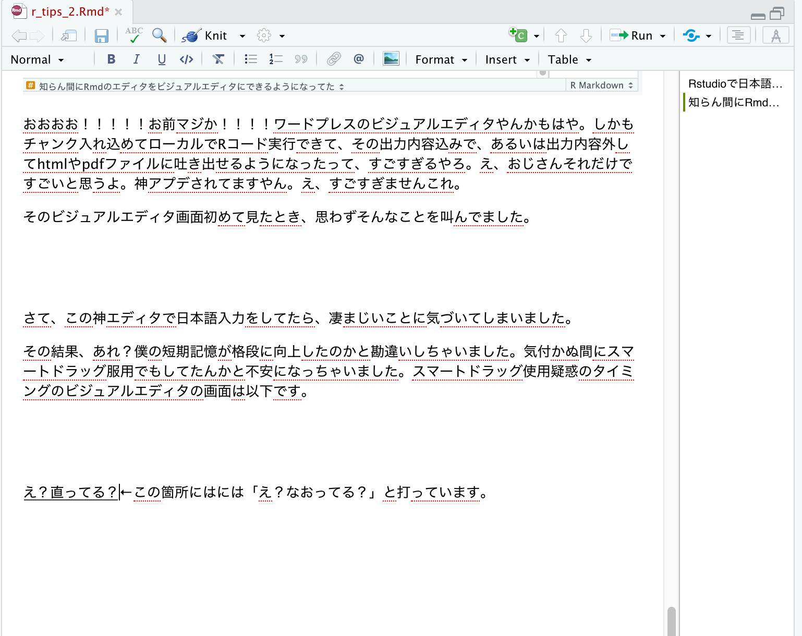
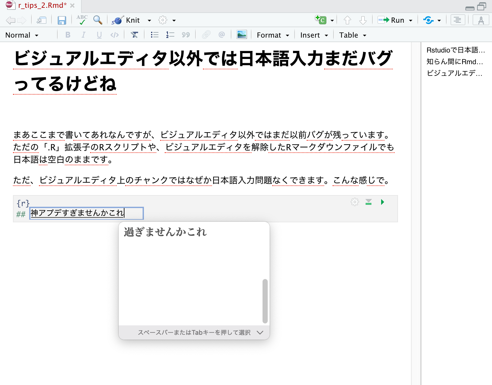

今まで、Rstudioを利用して、.Rスクリプトや、Rmarkdownファイルを作成していると、日本語入力の際に、以下のように変換確定させるまで空白になっちゃう致命的なバグがありました。いや、おそらく、これからもあるでしょう。

さて、短期記憶の検査をしたら境界ギリギリのフルパワーADHDの私は、自分が.5秒前に打ち込んだ文字の記憶が流れるように消えていきます。そんな私には、変換確定までの記憶を保存する短期記憶など求められても無理ゲーです。
一応対処法として、[mac] Rstudioで日本語入力時に入力文字が表示されない などの対処法がありますがこの方法では、僕がファイルを閉じて開くたびにRstudio君は短期記憶勝負を仕掛けてきます。Rstudio君、僕の自信を打ち砕くのやめてください。
対処療法的な方法は調べたら出てくるのですが、今治療法のようなこのバグとおさらばする方法っていうのは調べても見当たりません。
困り果ててRstudioのオプション触ってたらこのバグの解決策が見つかったので共有します。
RstudioのRmdエディタのところをいじっていましたら、以下の画像のようにknitボタンの横の歯車内に、『Use Visual Editor』なるオプションを発見しました。

試しに、Visual Edeitorを使ってみたところ、画面はこんな感じになりました。

おおおお！！！！！お前マジか！！！！ワードプレスのビジュアルエディタやんかもはや。しかもチャンク入れ込めてローカルでRコード実行できて、その出力内容込みで、あるいは出力内容外してhtmlやpdfファイルに吐き出せるようになったって、すごすぎるやろ。え、おじさんそれだけですごいと思うよ。神アプデされてますやん。え、すごすぎませんこれ。
そのビジュアルエディタ画面初めて見たとき、思わずそんなことを叫んでました。
さて、この神エディタで日本語入力をしてたら、凄まじいことに気づいてしまいました。
その結果、あれ？僕の短期記憶が格段に向上したのかと勘違いしちゃいました。気付かぬ間にスマートドラッグ服用でもしてたんかと不安になっちゃいました。スマートドラッグ使用疑惑のタイミングのビジュアルエディタの画面は以下です。

macの仕様を自動変換してくれるLive変換入れてるんで、漢字になってますけど、まあそれはどうでもいいとして。
そう、日本語入力バグが生じなくなってるんですよね。変換確定する前の状態で空白が生まれなくなったんですよね。つまり、普通に日本語入力できて、短期記憶勝負をしなくて済むようになってたんですよね。
正直この日本語空白バグは一生付き合うものだと思っていたので、感動しました。あと、日本語空白バグの改善に期待一切してなかったので、それが直るよりも僕の無意識スマートドラッグ摂取の方が可能性高いと思って、脳みそが混乱してしまいました。
まあここまで書いてあれなんですが、ビジュアルエディタ以外ではまだ以前バグが残っています。ただの「.R」拡張子のRスクリプトファイルや、ビジュアルエディタを解除したRマークダウンファイルでも日本語は空白のままです。
ただ、ビジュアルエディタ上のチャンクではなぜか日本語入力問題なくできます。こんな感じで。

僕自身は地のRスクリプトファイルにRコード書かないで、全部Rmdに書くようにしているので、今回の神アプデで大変満足しています。あと、ビジュアルエディタが使い勝手良すぎて、日本語論文書くのにも重宝しそうだなと思いました。もはやWord要らんっすね。
以上、Rstudioで日本語入力したい方々の参考になれば幸いです。